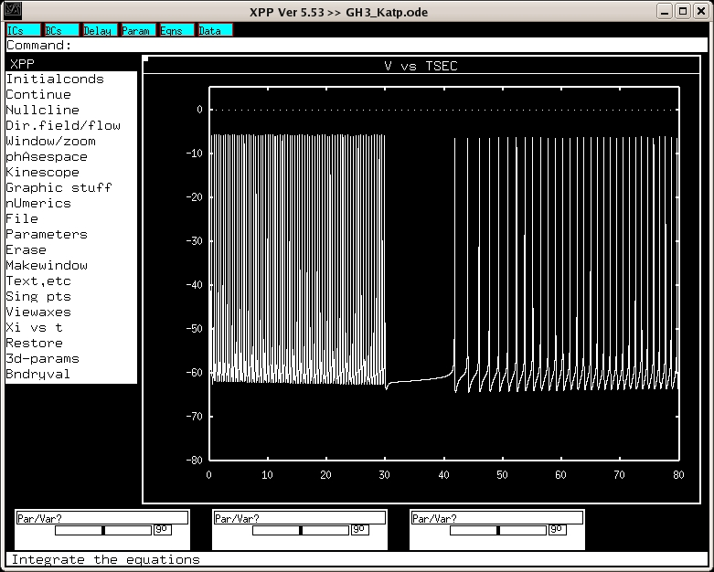

This is the readme.html for the models associated with the
paper shown below:
Wu, S.-N. And H.-D. Chang (2005). "Diethyl pyrocarbonate, a
histidine-modifying agent, directly stimulates activity of
ATP-sensitive potassium channels in pituitary GH3 cells"
Biochem Pharm 2005 Dec 19; [Epub ahead of print].
ABSTRACT
The ATP-sensitive K(+) (K(ATP)) channels are composed of
sulfonylurea receptor and inwardly rectifying K(+) channel
(Kir6.2) subunit. These channels are regulated by intracellular
ADP/ATP ratio and play a role in cellular metabolism. Diethyl
pyrocarbonate (DEPC), a histidine-specific alkylating reagent, is
known to modify the histidine residues of the structure of
proteins. The objective of this study was to determine whether
DEPC modifies K(ATP)-channel activity in pituitary GH(3) cells.
Steady-state fluctuation analyses of macroscopic K(+) current at
-120mV produced power spectra that could be fitted with a single
Lorentzian curve in these cells. The time constants in the
presence of DEPC were increased. Consistent with fluctuation
analyses, the mean open time of K(ATP)-channels was significantly
increased during exposure to DEPC. However, DEPC produced no
change in single-channel conductance, despite the ability of this
compound to enhance K(ATP)-channel activity in a concentration-
dependent manner with an EC(50) value of 16muM. DEPC-stimulated
K(ATP)-channel activity was attenuated by pretreatment with
glibenclamide. In current-clamp configuration, DEPC decreased the
firing of action potentials in GH(3) cells. A further application
of glibenclamide reversed DEPC- induced inhibition of spontaneous
action potentials. Intracellullar Ca(2+) measurements revealed
the ability of DEPC to decrease Ca(2+) oscillations in GH(3)
cells. Simulation studies also demonstrated that the increased
conductance of K(ATP)-channels used to mimic DEPC actions reduced
the frequency of spontaneous action potentials and fluctuation of
intracellular Ca(2+). The results indicate that chemical
modification with DEPC enhances K(ATP)-channel activity and
influences functional activities of pituitary GH(3) cells.
To run the models:
XPP: start with the command
xpp ode\GH3_Katp
Mouse click on Initialconds, and then (G)o.
This makes a trace similar to fig 7 of the paper:

Regarding the xpp program, please visit Bard Ermentrout's website
http://www.pitt.edu/~phase/
which describes how to get and use xpp (Bard wrote xpp).
These model files were submitted by:
Dr. Sheng-Nan Wu, Han-Dong Chang
department of Physiology
National Cheng Kung University Medical College Tainan 70101, Taiwan
snwu@mail.ncku.edu.tw